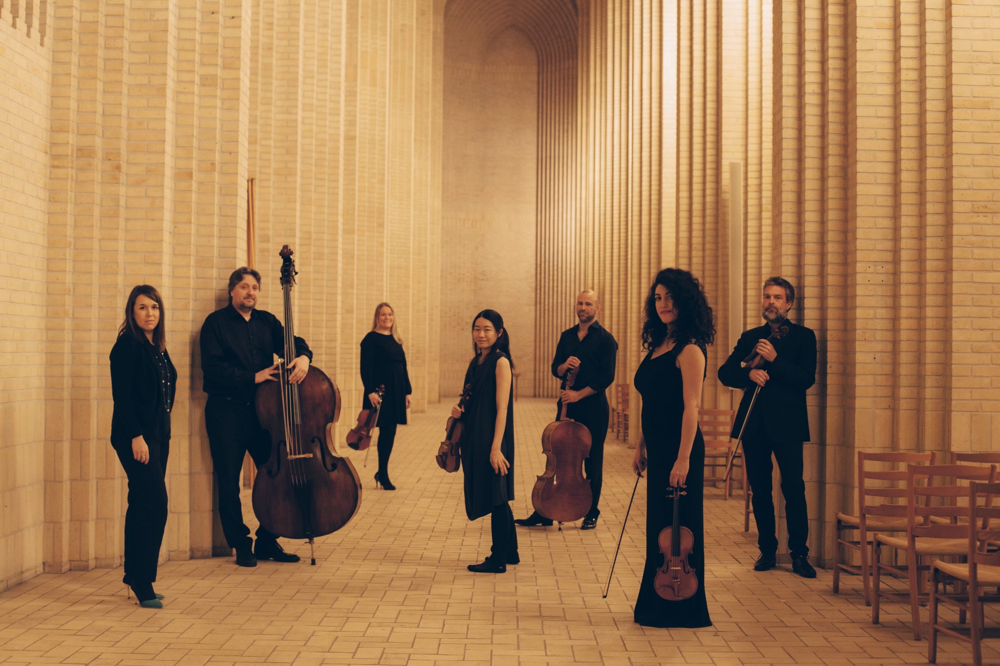

SCANDINAVIAN CHAMBER SOLOISTS
Chamber music of international dimensions
"A melting pot of talent from all over the world" — the ensemble's sound has been called a mini world of stringed instruments. EMIL OTTO SYVERTSEN, FÆDRELANDSVENNEN
THE MUSICIANS
WHO WE ARE
Musicians from five countries, one Kristiansand stage
Scandinavian Chamber Soloists is a Kristiansand-based ensemble comprised of musicians from Norway, Sweden, the Netherlands, Armenia and Japan.
Founded and led by violinist Loussine Azizian Idsøe, the ensemble has toured Norway and Denmark to critical acclaim since its 2019 debut.
Get in touch →